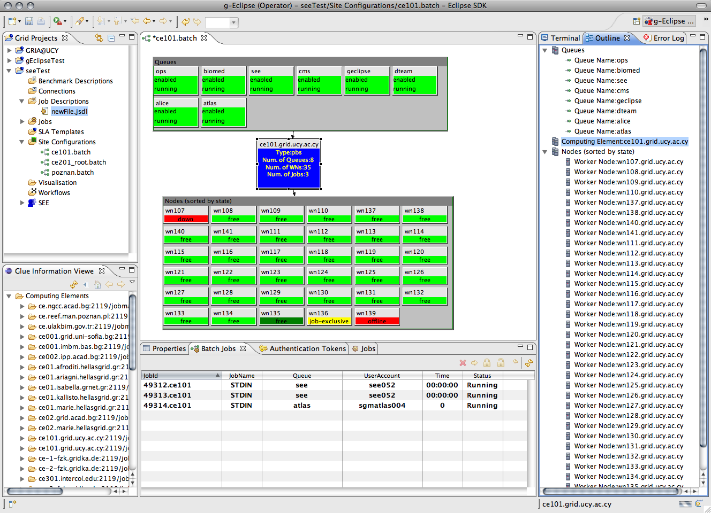

File > New > Batch Service. a dialog opens up where you specify the name of the batch service
and which project it should belong to.
File > New > Batch Service. a dialog opens up where you specify the name of the batch service
and which project it should belong to.
The Batch Editor allows a system administrator of a batch based Grid middleware to monitor and maintain her site. The resources of the Grid site are depicted in the editor using color coding to show their status/state. Various operations can be applied to the resources from their context menu. The current implementation supports the PBS batch service, support for other batch services can be added (see g-Eclipse development documentation).
In order to connect to a Batch Service you first have to specify the end-point by using the New Batch Service Wizard.
In order to activate this wizard you go to
File > New > Batch Service. a dialog opens up where you specify the name of the batch service
and which project it should belong to.
Clicking Next will take you to a page where you specify the address of the machine where batch service is running and the user name of your account on that machine.

Clicking Finish will create the batch service holder file and the Batch editor will open.
All the resources of the Grid site are displayed in the Batch editor as well as listed (by category) in the Outline View. By clicking on a resource (e.g. Queue, Computing Element, Worker Node) in the Batch editor or in the Outline View the properties of the specific resource are shown in the Properties View in addition the jobs that are currently present in that resource will be listed in the Batch Job View.
In case you are accessing a large Grid site you can zoom in/out using the size drop-down combo-box in the menu bar or using the context menu option from anywhere within the editor. From the context menu you can choose to Zoom In or Zoom Out.
Within each of the groups of the Queues and Nodes the user can choose to sort the elements. This is done from the context menu within the group box. In the context menu the user is given to option to sort by Sort by name or Sort by state. The sorting property used, is then shown in the frame of the group box.
From the context menu of a Computing Element you can (given you have administration rights):

From the context menu of a selection of Worker Nodes you can (given you have administration rights):
From the context menu of a selection of Queues you can (given you have administration rights):
In the Batch Jobs View displays all the batch jobs residing on the selected resource in the Batch editor. From the menu bar of the view or from the context menu of selected jobs various actions can be applied to the jobs.
From the menu bar or context menu of a batch job in the Batch Job View you can (given you have administration rights):